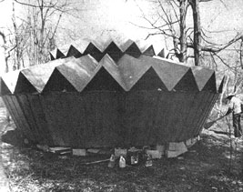
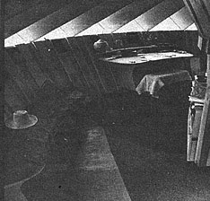

As designer of the modern yurt, I'm often asked about the structure's advantages . . . so I'll start this article by mentioning some of those strong points.
[1] One outstanding merit of the modified Asian shelter is its low cost. The most expensive part of most houses is the finish, both interior and exterior. In the yurt, structure and finish are united: The visible inner and outer surfaces serve to hold up the roof. A little wax on the smooth pine walls of a yurt to ease cleaning is the only non-structural treatment needed.
[2] Most domestic structures need high eaves to lift their joists or ceiling timbers clear of their occupants' heads. The tension band around the top of a yurt, on the other hand, makes possible the use of low, only slightly pitched overhead beams. This permits a cosier, more easily heated house that hugs the ground and blends gently with the landscape.
[3] Another fuel-saving factor is the yurt's circularity. Round structures present less surface to the outside chilling forces than do angular ones, and so need less energy for heating. Similarly, they're more easily cooled in summer.
Comments like those I've just made often bring another question: "If round houses are so good, why weren't they developed sooner or used more?" Well, of course, they were! A large part of the world's population calls a round space home (or did until recently). In North America alone, there were the hogans of the Navajo, the Sioux tipis, the Mandan earth lodges, the thatched domes of the Wichitaw, the beautiful kivas of the Pueblo and Anasazi and the igloos of the Canadian north. Consider also the yurts of inner Asia, the Lapp kotas, the truili in Italy, the kraals, rondavls and rich variety of other circular dwellings current in Africa today.
The question is valid, though, for modern industrial societies. Until recently, we knew no easy ways to construct attractive, permanent round houses using little labor and material. Most of our domestic architecture has been dominated by linear elements (timbers and metal beams) or sheets such as plywood and glass. It's taken a lot of playing with math to find simple methods of building curved structures with these rigid rectilinear forms. The results have been the wooden hyperbolic-paraboloids, the geodesics, the yurts. As we become more aware of the quality of space in such buildings, others will certainly follow.
This is one reason why it's so exciting to be alive and involved in structural design at this moment in history: The breakthroughs with these forms (and foams, membranes and inflatables) have come in such a condensed period of time that the world has barely begun to realize their potential.
Just as stimulating are other current developments that are happening so fast even experts can't keep up with the growth of the field: advances in materials like tempered glass, highstrength cable, tubing, metals, plastics, sealants, adhesives and coatings . . . at ever-lower costs of production. This explosion makes for exciting possibilities indeed.
Does that remark sound strange, coming from one who revels in creating roofs of birchbark and sod? It shouldn't! Ancient materials-timber, stone, adobe, bark, sod, thatch, rope, cloth and rawhide-are truly marvelous, but so are the modern substances that make possible structures never before imagined. I want to learn all I can both from the wisdom of our forebears and from recent discoveries . . . and to blend this knowledge for the creation of a more beautiful world.
The beauty of these advances in forms and materials-from the social point of view-is not just the blessing of simpler, cheaper, more harmonious housing, but the potential for architecture to become democratic. With the help of the new technology, the average person can build his own yurt or other shelter, live in it, seek to come into harmony with its spirit and thus take part in improving its design.
That point is important now, when our concepts of architecture are changing. We're more aware than ever before of space and its effects on us . . . and there's a great increase in concern for the emotional growth to be gained from shaping our own dwellings. Opposed to this trend are powerful vested interests which would prefer that we remained ignorant of our power to supply ourselves with shelter and other needs. (Meeting human wants, after all, is big business.) Nevertheless, many of us are beginning to recognize the right of every individual to participate in the formation of his personal environment . . . and to realize that we must design a society which will promote-as opposed to permit -this.
One result of our increased sensitivity to our surroundings is that we're becoming more aware of the prevailing system's defects. At present we live in homes with enormous amounts of waste space and attendant costs of purchase, heating and care. Bedrooms, for instance, resemble schools and churches in being empty most of the time. My design sense is troubled when I see a large bed in the center of a floor, dominating the area 24 hours a day but being used only eight or so. It should at least be built to raise to the ceiling (a la Jefferson) or fold into the wall (a la Murphy) so that on a rainy day the kids can have a place to play marbles that isn't underfoot.
In designing yurts I've been concerned with creating multipurpose space: beds that can be laid out at night and which disappear during the day . . . living areas that can shift from settings for quiet conversation, to dining, to craftwork , to steep. I'm not advocating crowded living quarters, of course. On the contrary, more flexibility means greater spaciousness.
Here's another aspect of contemporary housing that troubles me: Where is the workspace in present-day homes? In most cases, that function of work has been degraded-pushed out into the cellar or garage-or completely done away with. The only work surface I find in many houses is the kitchen counter. If I want to draw, cut out a leather bag, make a shirt or carve a paddle there's no place to do it. Look around you. If your home is different, blessings on you and may your children's children have happy grandparents.
The yurt owner, on the other hand, will find that his house makes an excellent workshop. Location of the workbench directly in the center, under the skylight, gives both good lighting and space to move freely around the project. (The same relationship holds true for a kitchen yurt: Imagine your stove, sink and counter space placed under the central light in a circular surface, with the bins ranged along the wall. You could call the building your "studio kitchen".)
Incidentally, an English friend came up with the idea of a yurt garage. He maintains that the curved wall is an improvement over the traditional car stable because it permits uncramped opening of the vehicle's doors . . . and also provides a good work space. The yurt needs to be built somewhat higher for this use, though, and the large door opening must be reinforced with special care.
The simpler a yurt's furnishings, the greater its spaciousness and freedom of movement and the less its visual clutter, expense and difficulty in cleaning. Keeping the area above desk height clear of obstructions increases the feeling of openness (this effect is aided if hanging lamps can be removed or lowered during the day). Furniture and storage areas should be low.
Furniture construction is simplified if the yurt wall is used as support. In addition, built-in items are easier to make, less costly and stronger than their free-standing counterparts. I find it helpful to view beds, desks, tables, workbenches and shelves as basically the same. They vary in size, in proportion and in height but are all valued essentially for their horizontal surfaces. If you look at them this way, learning to build one is to learn to build them all.
Probably the most striking feature of the yurt's interior is the floor covering. A good rug with plenty of pillows provides flexibility with comfort.
At this point you may want to reflect on the old Japanese belief that in homes and in temples we should go unshod. Have you considered asking people to take off their shoes in your yurt? It simplifies life greatly, is more respectful of carpets and reduces the labor of housecleaning. Besides, we walk, feel and act differently without footwear, and the atmosphere is both gentler and quieter.
In my Plowboy Interview (MOTHER NO. 19) I mentioned that a design was in the works for a concentric yurt, to consist of one building within another. I'd like to tell you a little about this structure, for which plans are now available.
The concentric yurt design was developed to meet the need for more room than is provided by the standard yurt (which is 17 feet in diameter at the eaves). Merely enlarging the basic unit wasn't the answer: As the house's area is increased, the waste space at the top expands rapidly and the lighting gets poorer. There's also the basic engineering fact that when you double the span of a building, the roof members must be made not twice but four times as strong (take notice, all you wouldbe yurt doublers!). I was searching for a way to support a larger span-without using heavier material-when I realized that a "yurt within a yurt" could be 32 feet across at the eaves, about five times as roomy as its smaller counterpart . . . and still be constructed with planks of the same thickness used in an ordinary yurt.
The new structures have proved delightful to live in. One problem of circular dwellings (like the standard yurt) is that they're not easily sectioned off into pleasant shapes. At first I looked on the concentric plan as a solution to that difficulty and planned to divide the outer ring into rooms. The curved, expanding space felt so fine, however, that I hesitated and finally built a small separate yurt for a john and shower. In general, I'd recommend adding more of the buildings if separate facilities are wanted, rather than breaking up the interior of one.
In any case, the nature of the concentric yurt does create several areas for different functions. The inner section, for instance, is raised five feet above the outer ring and serves as either a private retreat or a quiet circular dining and gathering room.
The understory beneath that central core is a surprising spot. It has much the same feel as a boat's cuddy: minimum space, but with an appeal of its own. Headroom of 55 inches sounds ridiculously small for use, yet allows a person 6' 2" to sit upright in comfort.
The couch I've designed to fit this lower area is 13-1/2" high, with 3" of foam padding on top. It serves both as seating and as an extra bed. The unit's front edge is made into a bookcase-to conserve space and to keep special books near at hand-and storage room for seldom-used articles is available underneath. (In fact, the whole understory is good stowing room: Part of it can become a pantry, and chests of drawers can be put on rollers and wheeled there until needed. The spaciousness of the yurt is enhanced, however, if this part is left as open as possible.)
A full-sized lower story can also be created by building a yurt with a sunken center. One of this type-in Vermont-has its kitchen and bath partly below ground level.
The adventurous builder can no doubt imagine many possibilities in the concentric design: three or four-ring yurts, for instance, with each level dropping below the preceding one to allow for clerestory lighting of the interior. A word of warning, though: Don't alter the basic plan until you've had the experience of putting up one building according to directions. Years of thought, care and experimentation have gone into the conception, and random changes are unsafe. The structure can and will be improved . . . but you have a greater chance of contributing to that improvement if you stick to the instructions the first time around. That way you'll learn by doing and end up with a useful house, rather than a pile of boards collapsed about your ears after the first heavy snow.
The concentric yurt can be built by anyone skilled with hand tools and liberally supplied with imagination. It's not, however, a beginner's project. One good approach to its construction is to organize a yurt workshop, at which an instructor from the Foundation will teach you and your friends while you actually erect your new home, classroom or whatever. (There's a consultant fee of $700 for a concentric yurt project, which usually takes a week for a dozen or so workers. Both the time and the charge are halved if You choose a standard
model.)
The cost of materials for the concentric yurt is $2,000-$3,000, or about four times as much as for the smaller structure. Remember, though, that you wind up with five times as much space.
Please note: The concentric plan is in addition to the standard plan. Both are necessary to build the larger yurt (because all the directions wouldn't go on one sheet). If you already have the basic instructions-$ 3.50- just order the supplement for $5.00 from the Yurt Foundation, Bucks Harbor, Maine 04618.
In closing, I'd like to thank all of MOTHER's readers who have supported the Yurt Foundation and its work . . . and especially those who have sent in contributions in addition to buying the plans. I've long wanted to see whether an organization dedicated to cultural design and social change could exist on small donations from large numbers of supporters. So far, we've been able to do so.
By the way, if a request of yours isn't acknowledged promptly, don't write to MOTHER . . . write to me. The mails can foul up (like when the post office in College, Alaska burned). I lose letters too (like the ones I dropped on the beaver dam last spring). And you-yes, you -sometimes forget to include a return address. When in doubt, be generous, drop me a line and ask what happened.
|
 |
 |
|